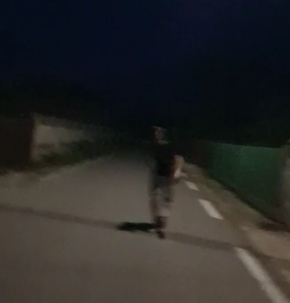

ce este acesta?
un sat din comuna vadu-pasii judet buzau care in aparenta pare normal dar aparentele sunt inselatoare
ce se intampla?
acest sat este unul pasnic si are conditii chiar bune de locuit pe timpul zilei,dar cand se lasa seara problemele incep sa apara
sfaturi pentru supravietuire
incearca pe cat posibil sa nu iesi afara pe timpul serii
tot timpul sa fi inarmat sau gata sa fugi
fi extrem de discret si cel mai bine evita orice si pe orice care pare iesit din comun
entitati periculoase
pe timp de zi nu iti poti da seama dar satul este plin de entitati periculoase
bombardierul
poza neclara facuta de echipa noastra de research
aceasta entitate au o forma fizica impresionanta si este este foarte ostila cu cei pe care nu ii cunoaste si v-a ataca cu prima ocazie.
ai 2 optiuni sa scapi de aceste entitati:
-prima optiune este sa le dai bani(suma poate varia)
-le pacalesti in a crede ca le esti prieten folosind un limbaj si gesturi de cartier
cum iti poti da seama ca un bombardier se aproapie?
acestia sunt usor de recunoscut daca esti atent la niste aspecte
de multe ori acestia poarta imbracaminte de firma gucci versace armani etc.
ocazional pot avea cu ei o boxa din care canta genuri variate de muzica
atentie!!!
nu incerca niciodata sa te bati!
chiar si daca dobori unul sau doi acestia se pot inmultii repede si te vei gasii intr-o situatie fara scapare
cainii maidanezi

exemplu de caine maidanez
nu la fel de periculosi ca bombardierii aceste entitati te vor urmarii si ataca din intunerii cand te astepti mai putin
poti scapa de ei daca fugi destul de mult sau daca ii lovesti,dar asta poate fi riscant si poate cauza rani.
boschetari/oameni beti
echipa noastra nu a putut gasi poze cu aceste entitati
aproape inofensivi pot fi evitati cu usurime
cel mai des intanliti in cladiri neterminate si pasaje intunecate si iti vor cere o tigare sau un leu
atentie!!!
niciodata sa nu le oferi ceva,vorbesti cu ei sau sa te holbezi prea mult la ei
daca acestia se iau dupa tine fugi!
entitati prietenoase
Laur

poza neclara cu Laur
Laur este un membru al echipei noastre de research
rare ori poate fi intanlit pe timpul serii in bajani sau vadu-pasii
acesta v-a evita orice interactiune cu necunoscutii
Razvan